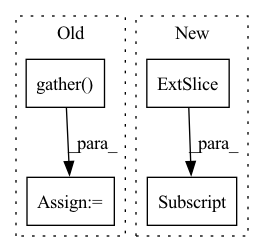

Pattern ID :11402
Before Change
other_idx = torch.where(condition1, other_idx, other_idx1) // (C, batch_size)
min_values, min_idx = torch.where(other_idx, values, values.max()).min(dim=-1)[0] // (C)
min_labels = labels.gather(dim=1, index=min_idx.unsqueeze(1)) .flatten() // (C)
min_labels_counts = labels.eq(min_labels.unsqueeze(1)).int().sum(dim=1) // (C)
condition2 = min_labels.ge(self.n_samples - 2) // todo: Not sure: self.n_samples -> self.seed_num
idx_list = condition2.nonzero()[:self.top_n_neurons]
neuron_dict[layer] = {int(idx): int(min_labels[idx]) for idx in idx_list}After Change
condition1 = labels[:, :, 0].eq(_label) // exclude the ground-truth labels
values = torch.where(condition1, values[:, :, 1] - values[:, :, 2],
values[:, :, 0] - values[:, :, 1]) // (C, batch_size)
labels = torch.where(condition1, labels[:, :, 1] , labels[:, :, 0]) // (C, batch_size)
mode_labels = labels.mode(keepdim=True)[0] // (C, 1) The most frequent label
mode_idx = labels.eq(mode_labels) // (C, batch_size)In pattern: SUPERPATTERN
Frequency: 4
Non-data size: 4
Instances Fragment ID: 38849336
Project Name: ain-soph/trojanzoo
Commit Name: 1684c28ef38502abb83d37beb845b69007e33274
Time: 2020-07-07
Author: ain-soph@live.com
File Name: trojanzoo/defense/backdoor/abs.py
M Class Name: ABS
N Class Name: ABS
M Method Name: find_min_max(3)
N Method Name: find_min_max(3)
M Parent Class: Defense_Backdoor
N Parent Class: Defense_Backdoor
M File Name: trojanzoo/defense/backdoor/abs.py
N File Name: trojanzoo/defense/backdoor/abs.py
M Start Line: 210
M End Line: 225
N Start Line: 234
N End Line: 254
Before Change
out = torch.stack(hs, dim=1)
final_index_indices = final_index.unsqueeze(-1).expand(out.size(0), out.size(2)).unsqueeze(1)
final_out = out.gather(dim=1, index=final_index_indices.long()) .squeeze(1)
out = self.linear(final_out).unsqueeze(1)
After Change
// final_index_indices = final_index.unsqueeze(-1).expand(out.size(0), out.size(2)).unsqueeze(1)
// final_out = out.gather(dim=1, index=final_index_indices.long()).squeeze(1)
// import pdb ; pdb.set_trace()
out = self.linear(out[:,out.shape[1]-self.output_time:,:] )
return out
Fragment ID: 38849347
Project Name: sheoyon-jhin/ancde
Commit Name: 0ed00c106cfccfcd0a9d1c1640fb5e5ea278ce9d
Time: 2022-01-10
Author: sheoyonj@yonsei.ac.kr
File Name: experiments/models/other.py
M Class Name: _GRU_forecasting
N Class Name: _GRU_forecasting
M Method Name: forward(5)
N Method Name: forward(5)
M Parent Class: torch.nn.Module
N Parent Class: torch.nn.Module
M File Name: experiments/models/other.py
N File Name: experiments/models/other.py
M Start Line: 122
M End Line: 151
N Start Line: 122
N End Line: 151
Before Change
batch_size = output.shape[0]
hidden_size = output.shape[-1]
start = torch.gather(output, index=subject_ids[:, :1].unsqueeze(1).expand((batch_size, 1, hidden_size)), dim=1)
end = torch.gather( output, index=subject_ids[:, 1: ].unsqueeze(1).expand((batch_size, 1, hidden_size)), dim=1)
subject = torch.cat((start, end), dim=-1)
return subject[:, 0]
def forward(self, text, subject_ids, position_enc=None, subject_labels=None, object_labels=None, use_layer_num=-1, device="cpu"):After Change
// print("start_end shape is " + str(start_end.shape))
// start = torch.gather(output, index=subject_ids[:, :1].unsqueeze(1).expand((batch_size, 1, hidden_size)), dim=1)
// end = torch.gather(output, index=subject_ids[:, 1: ].unsqueeze(1).expand((batch_size, 1, hidden_size)), dim=1)
subject = torch.cat((start_end[:, 0], start_end[:, 1] ), dim=-1)
// print("subject shape is " + str(subject.shape))
return subject
Fragment ID: 38849348
Project Name: 920232796/bert_seq2seq
Commit Name: 4c974102fd7dd4b7a9753f081fc604c403c39b35
Time: 2020-11-22
Author: 920232796@qq.com
File Name: bert_seq2seq/bert_relation_extraction.py
M Class Name: BertRelationExtrac
N Class Name: BertRelationExtrac
M Method Name: extrac_subject(3)
N Method Name: extrac_subject(3)
M Parent Class: nn.Module
N Parent Class: nn.Module
M File Name: bert_seq2seq/bert_relation_extraction.py
N File Name: bert_seq2seq/bert_relation_extraction.py
M Start Line: 56
M End Line: 59
N Start Line: 57
N End Line: 63
Before Change
r_idxs = context.indices_repetition.view(-1, 1, 1, 1, 1)
r_idxs = r_idxs.expand(-1, height, width, num_leaves, -1)
samples = samples.gather(dim=-1, index=r_idxs)
samples = samples.squeeze(-1)
// If parent index into num_leaves are given
if context.indices_out is not None:After Change
// Filter each sample by its specific repetition
tmp = torch.zeros(num_samples, d, c, device=context.repetition_indices.device)
for i in range(num_samples):
tmp[i, :, :] = samples[i, :, :, context.repetition_indices[i]]
samples = tmp
// If parent index into out_channels are given Fragment ID: 38849342
Project Name: braun-steven/simple-einet
Commit Name: a4eb63bd492b9a22102ddc82e107efac0bdf04ee
Time: 2022-01-07
Author: steven.lang.mz@gmail.com
File Name: simple_einet/distributions.py
M Class Name: AnonimousClass
N Class Name: AnonimousClass
M Method Name: dist_sample(2)
N Method Name: dist_sample(2)
M Parent Class:
N Parent Class:
M File Name: simple_einet/distributions.py
N File Name: simple_einet/distributions.py
M Start Line: 86
M End Line: 106
N Start Line: 94
N End Line: 104